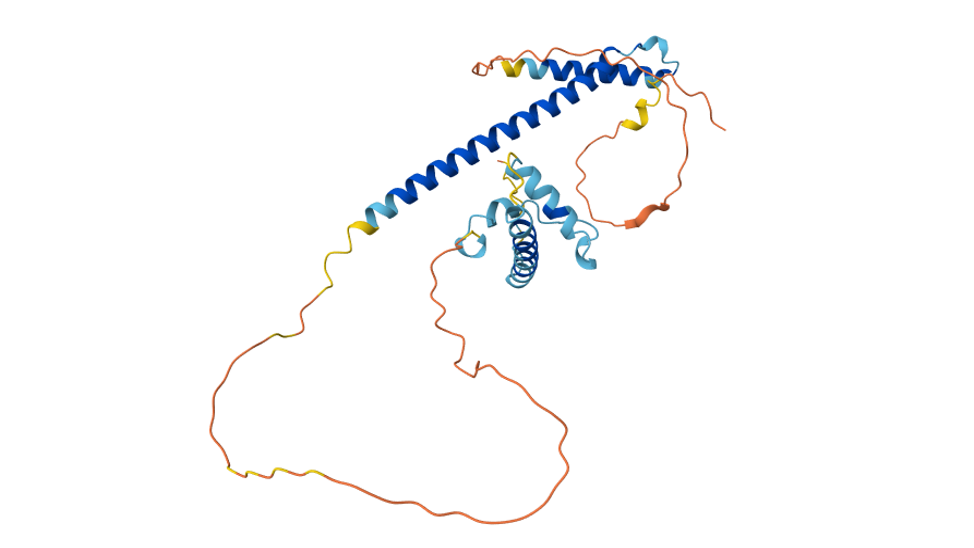

"Thence we came forth to rebehold the stars."
Dante Alighieri,
The Divine Comedy: Inferno, Canto 34, 139

Hi.
I am really glad that you found your way to my homepage. My name is Vincent and I am currently finding my passion for computer science and trying to make a meaningful impact on this world.
Currently, I am still studying in high school (Gymnasium) in Germany. In order to find out more about topics I am interested in, I started a bunch of projects to gain insight into various fields.
To explore web development, I made this homepage to experiment with different frontend tools in order to gain a cool insight into how frontend development might work out!
As of now, my homepage may still look kind of crappy, but this is a reflective journey of my real frontend skills. I want to keep it clean and based, so everything you are sseing here is real skill I have aquired. No fancy templated, no frameworks (yet). Probably the website will have an entirely different design if you come to visit it later, as I am constantly learning to improve my web developement skills!
My Projects
-

Investigating the physiological functions of the Gene AT1G24380 and its homologues in the thales cress (Arabidopsis thaliana)
-

Understanding the architecture of deep neuronal networks with only high school mathematics and no prior programming knowledge through a no code interface
Stuff where I competed in quite sucessfully
Blog
I am also interested in Cooking, Music and Bonsais. Probably I will blog about them later. Come to visit my site again to check out updates!